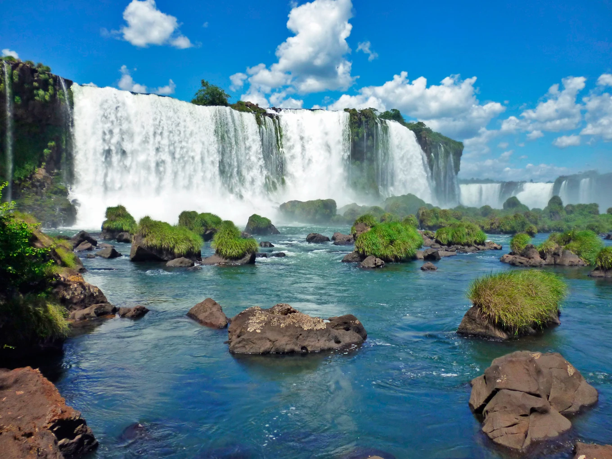
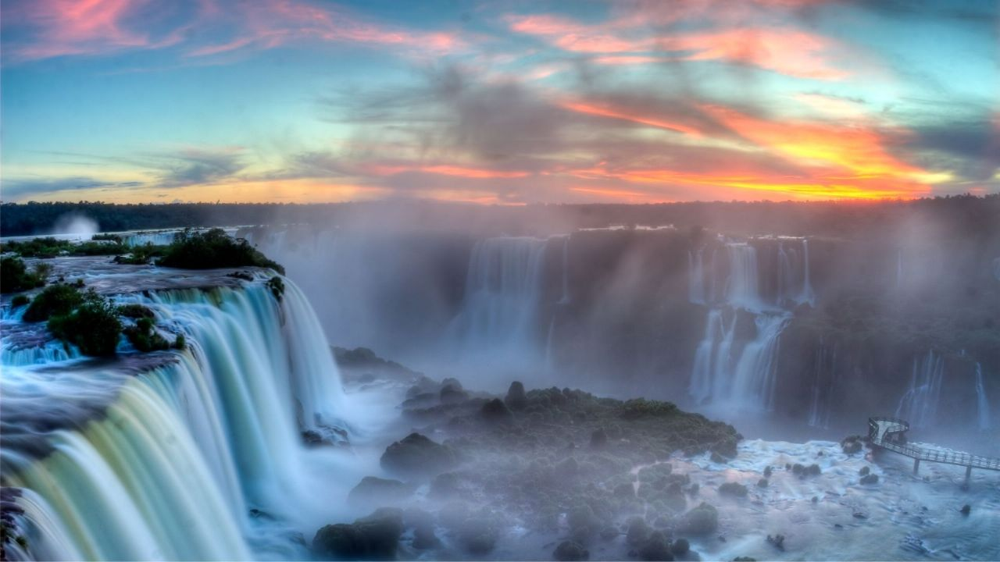

Su alta biodiversidad y las cataratas del Iguazú lo convierten en uno de los sitios prioritarios de conservación nacional e internacional. La selva es dominante; sin embargo, las diferencias en los suelos, el relieve y el régimen de aguas propician una gran variedad de ambientes.
 Antes de precipitarse por las caídas de agua de 80 metros de altura, el río Iguazú corre con una anchura de 1.500 metros, salpicando islas e islotes. Tras los vertiginosos saltos desemboca en un profundo cañón excavado por el mismo curso de agua, que lo conduce hasta el río Paraná. Las cataratas del Iguazú son un fenómeno natural de gran belleza que le valieron su reconocimiento mundial.